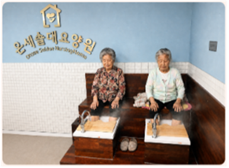
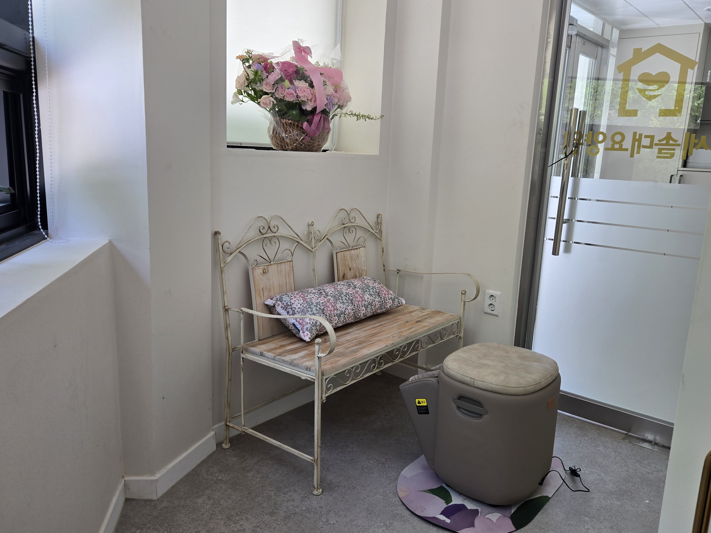
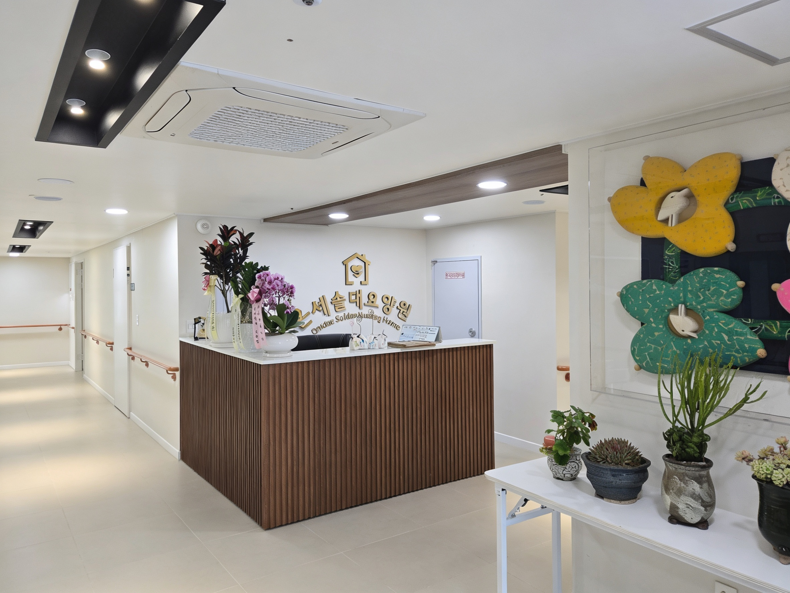
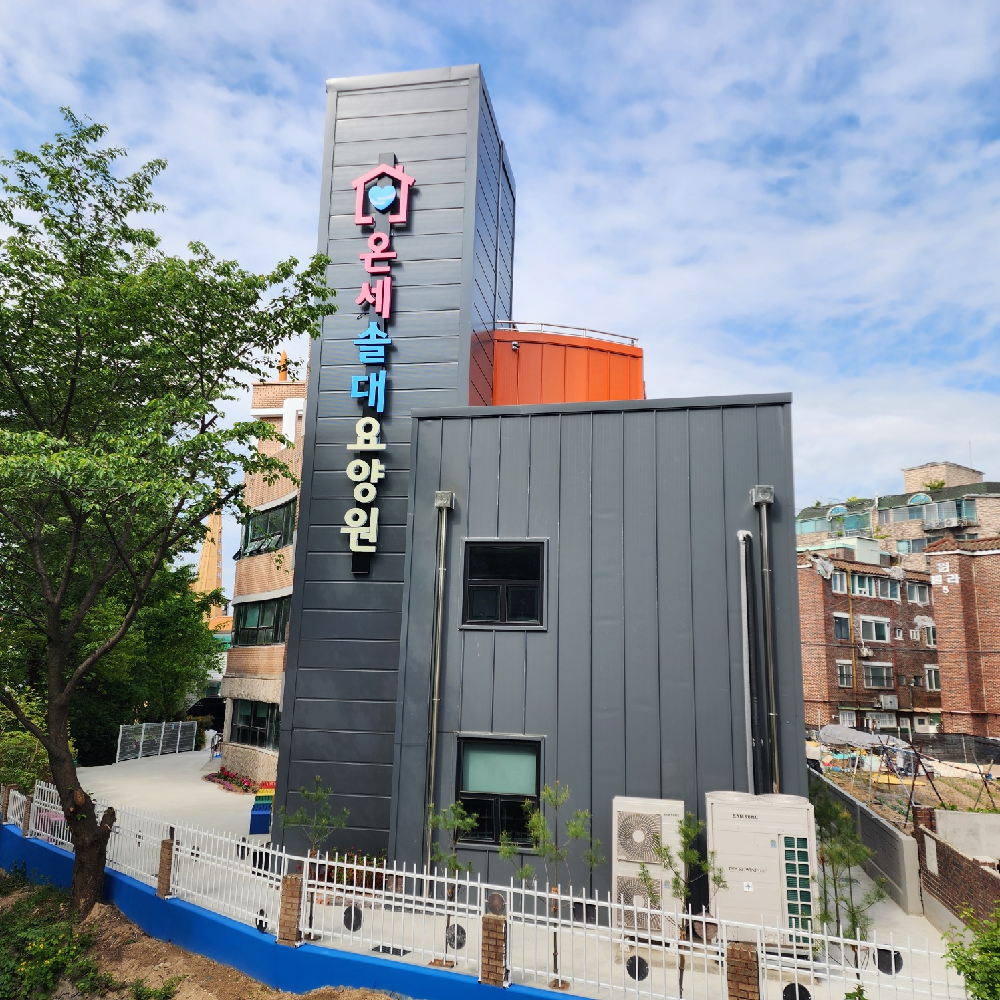

안쪽 (펼쳤을 때 읽는 순서: 좌 → 중 → 우)
특화 서비스
맞춤형 케어 시스템
실버케어 전문가들이 어르신의 개별적인 증상 및 불편한 부위를 확인하고 최적의 서비스를 제공합니다.
- 오감나무 오감체험을 통한 심리안정 프로그램입니다.
- 인지수 실버브레인 프로그램으로, 치매 예방 및 인지 기능 유지에 중점을 둡니다.
- 소리샘 음악 요법·합창 등 마음 회복 프로그램입니다.
- 아트팜 영화 스토리텔링·미술 테라피를 통한 자존감 회복 프로그램입니다.
족욕 서비스
어르신의 신진대사 기능 촉진 및 체내 노폐물 배출과 불면증 개선 등 스트레스를 완화시킬 수 있도록 반신욕 및 족욕 시설을 보유합니다.




특화 서비스
- 맞춤형 케어 시스템 실버케어 전문가가 어르신의 개별 증상 및 불편 부위를 확인하고 최적의 서비스를 제공합니다.
- 오감·심리 프로그램 어릴 때 뛰어놀던 자연을 배경으로 한 오감체험 중심의 자신감 부여·심리안정 프로그램을 운영합니다.
- 실버브레인 뇌건강을 위한 인지수업으로 치매 예방과 기능 유지에 중점을 둡니다.
- 음악·마음 회복 생애주기별 음악 요법, 솔루션 기반 마음회복 프로그램을 제공합니다.
- 영화·미술 테라피 영화감상 스토리텔링, 자존감 회복 심리치유 미술 테라피 프로그램입니다.
- 선진 족욕 시스템 해외 운영 노하우를 바탕으로 한 차별화된 요양 시스템, 반신욕 및 족욕 시설로 신진대사 촉진·노폐물 배출·불면 완화 등을 돕습니다.
- 재활특화 실버케어센터 「워크메이트」 맞춤형 재활 전문 운동기구로 재활 운동을 실시합니다.
- ASFR 재활 Active Standing & Functional Rehabilitation — 적극적 참여 기반 재활, 전신 협응을 통한 복합 재활 접근입니다.
- 체계적 식단 관리 GAP·친환경·천연 조미·저염 조리(레몬·오렌지즙 등)로 식단을 관리합니다.
- 맞춤 돌봄 · 위생 목욕·이미용·구강 등 위생 관리, 의복·침구 관리, 레크레이션·위문·기념 행사를 제공합니다.
- 안심가득 서비스 전용 밴드·수시 업로드, 분기·수시 개별상담(어르신 및 보호자)을 진행합니다.
- 전문 간호 · 의료 연계 촉탁의사·간호 상주, 투약·식이·욕창·응급·병원 연계, 작업·재활·체조·인지·심리 지원과 실버케어 전문가 소통을 제공합니다.

입소 안내
입소 시 준비 서류
- 장기요양인정서(공단 발행)·표준장기요양이용계획서(공단 발행)
- 시설입소용 감염병진단서(결핵·간염 등)
- 가족관계증명서(어르신 기준)
- 주민등록등본 또는 주민등록증(각 1통)
- 의사 진단서 또는 소견서·약 처방전 및 개인약(15일분 이상)
- 연계기록지(타 기관 이용 시)·수급권자 증명서 또는 의료급여증
입소 시 준비 물품
- 개인 사복(계절별 여벌), 양말·속옷(내의 포함), 실내화
- 전기면도기(해당 어르신), 사용 보장구·생활용품(워커 등)
- 평소 소지품·가족사진 등
오시는 길
시내버스
7-2, 25, 27, 300, 300-1, 310, 777, 900, 2007, 3000, 7770 — 수일여중·대우건설기술연구원 하차 후 도보 약 8분
마을버스 2-1 — 대우연구소 하차 후 도보 약 2분
마을버스 2-1 — 대우연구소 하차 후 도보 약 2분
네비 검색: 경기도 수원시 장안구 수일로117번길 18-2
상담 및 문의
- 전화 031-546-3588 (입소 상담)
- 이메일 onsesoldae@naver.com
- 웹 blue607426806.imweb.me
홈페이지 QR코드 및 실시간 소식은 웹사이트에서 확인해 주세요.